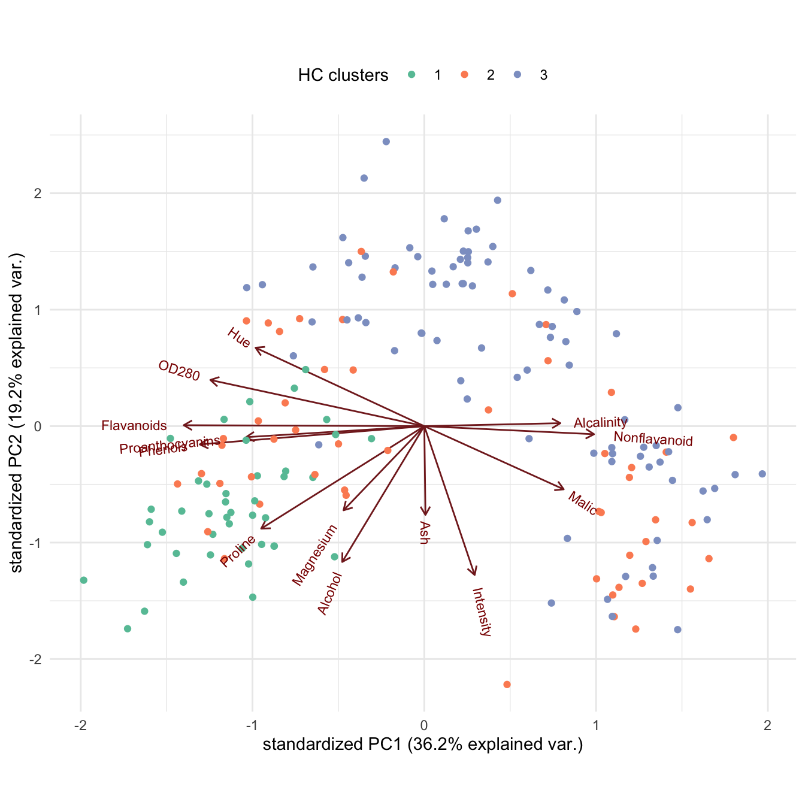
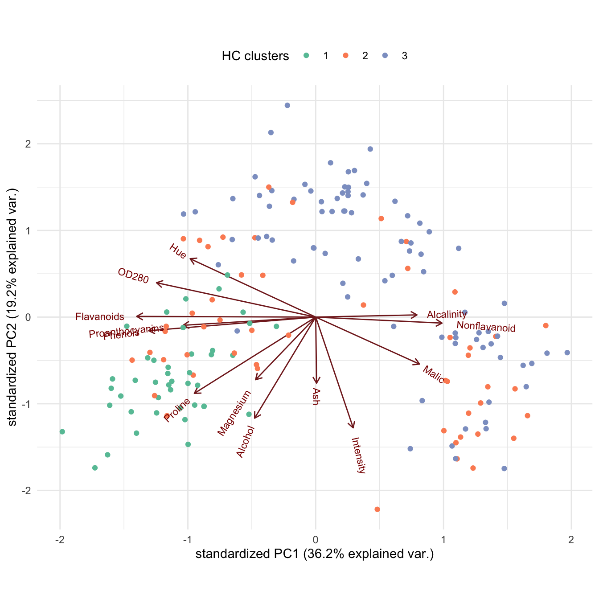
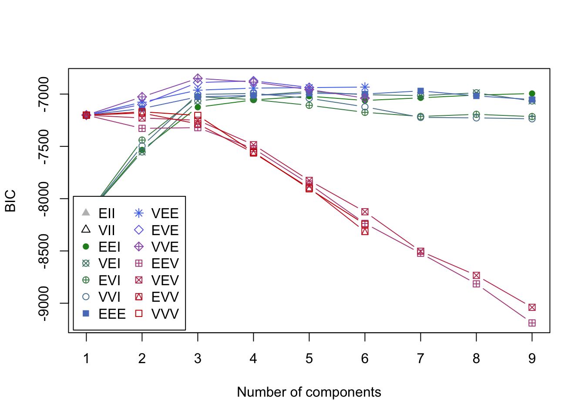
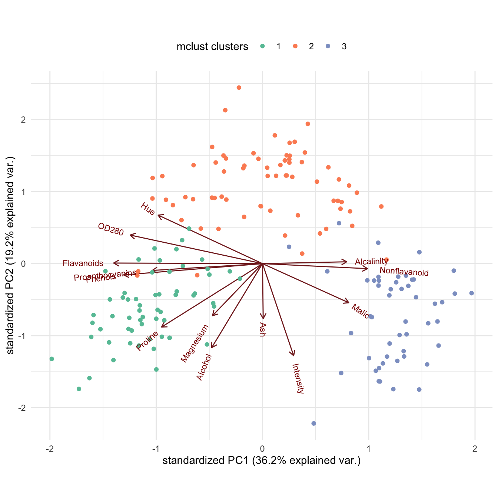
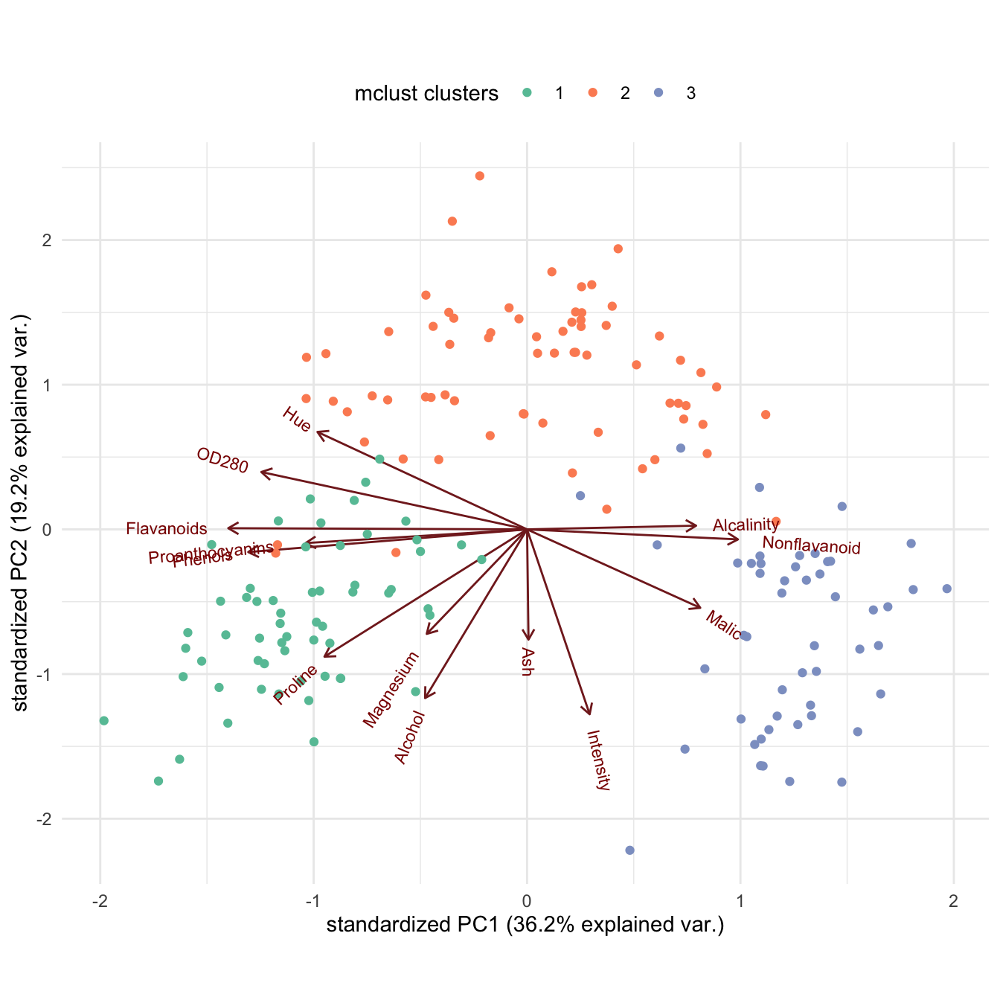

Lab 5: Clustering
High Dimensional Data Analysis practicals
Milan Malfait
24 Feb 2022
(Last updated: 2022-02-22)
Change log
## Install necessary packages with:
# install.packages(c("mclust", "gclus", "GGally", "tidyverse"))
# if (!requireNamespace("remotes", quietly = TRUE)) {
# install.packages("remotes")
# }
# remotes::install_github("vqv/ggbiplot")
library(mclust)
library(gclus) # contains the 'wine' data
library(ggbiplot)
library(GGally)
library(tidyverse)
theme_set(theme_minimal())1 The wine data
In this lab session, we will explore the wine data, following the
example analysis from Scrucca et al. (2016).
This dataset provides 13 measurements obtained from a chemical analysis of 178 wines grown in the same region in Italy but derived from three different cultivars (Barolo, Grignolino, Barbera). The original cultivar labels are provided in the dataset.
We will apply different clustering algorithms and validate them by comparing how well the clusters capture the original classes.
data("wine", package = "gclus")
class <- factor(wine$Class, levels = 1:3, labels = c("Barolo", "Grignolino", "Barbera"))
table(class)
#> class
#> Barolo Grignolino Barbera
#> 59 71 48
X <- as.matrix(wine[, -1])
summary(X)
#> Alcohol Malic Ash Alcalinity
#> Min. :11.03 Min. :0.740 Min. :1.360 Min. :10.60
#> 1st Qu.:12.36 1st Qu.:1.603 1st Qu.:2.210 1st Qu.:17.20
#> Median :13.05 Median :1.865 Median :2.360 Median :19.50
#> Mean :13.00 Mean :2.336 Mean :2.367 Mean :19.49
#> 3rd Qu.:13.68 3rd Qu.:3.083 3rd Qu.:2.558 3rd Qu.:21.50
#> Max. :14.83 Max. :5.800 Max. :3.230 Max. :30.00
#> Magnesium Phenols Flavanoids Nonflavanoid
#> Min. : 70.00 Min. :0.980 Min. :0.340 Min. :0.1300
#> 1st Qu.: 88.00 1st Qu.:1.742 1st Qu.:1.205 1st Qu.:0.2700
#> Median : 98.00 Median :2.355 Median :2.135 Median :0.3400
#> Mean : 99.74 Mean :2.295 Mean :2.029 Mean :0.3619
#> 3rd Qu.:107.00 3rd Qu.:2.800 3rd Qu.:2.875 3rd Qu.:0.4375
#> Max. :162.00 Max. :3.880 Max. :5.080 Max. :0.6600
#> Proanthocyanins Intensity Hue OD280
#> Min. :0.410 Min. : 1.280 Min. :0.4800 Min. :1.270
#> 1st Qu.:1.250 1st Qu.: 3.220 1st Qu.:0.7825 1st Qu.:1.938
#> Median :1.555 Median : 4.690 Median :0.9650 Median :2.780
#> Mean :1.591 Mean : 5.058 Mean :0.9575 Mean :2.612
#> 3rd Qu.:1.950 3rd Qu.: 6.200 3rd Qu.:1.1200 3rd Qu.:3.170
#> Max. :3.580 Max. :13.000 Max. :1.7100 Max. :4.000
#> Proline
#> Min. : 278.0
#> 1st Qu.: 500.5
#> Median : 673.5
#> Mean : 746.9
#> 3rd Qu.: 985.0
#> Max. :1680.02 Hierarchical clustering
Tasks
1. Perform hierarhical clustering of the wine data, using a Euclidean distance matrix and the complete-linkage algorithm (see ?hclust). Plot the clustering dendrogram.
2. Select an appropriate number of clusters from the hierarchical clustering (see ?cutree). Visualize the clusters on a PCA biplot and compare with the original labels.
hc_clusters <- cutree(hc, k = 3)
table(class, hc_clusters)
#> hc_clusters
#> class 1 2 3
#> Barolo 43 16 0
#> Grignolino 0 15 56
#> Barbera 0 21 27Solution
wine_pca <- prcomp(X, scale. = TRUE)
ggbiplot(wine_pca, groups = class) +
scale_color_brewer(palette = "Set2") +
labs(color = "Original labels") +
theme(aspect.ratio = 0.8, legend.position = "top")
ggbiplot(wine_pca, groups = factor(hc_clusters)) +
scale_color_brewer(palette = "Set2") +
labs(color = "HC clusters") +
theme(aspect.ratio = 0.8, legend.position = "top") 

Bonus: can you improve the results by using different distance metrics or linkages?
3 Model-based clustering
Tasks
1. Perform model-based clustering on the wine data (use mclust::Mclust()). Plot the BIC values and interpret the results. Compare the identified clusters with the original (true) labels.
Solution
mod <- Mclust(X)
summary(mod)
#> ----------------------------------------------------
#> Gaussian finite mixture model fitted by EM algorithm
#> ----------------------------------------------------
#>
#> Mclust VVE (ellipsoidal, equal orientation) model with 3 components:
#>
#> log-likelihood n df BIC ICL
#> -3015.335 178 158 -6849.391 -6850.734
#>
#> Clustering table:
#> 1 2 3
#> 59 69 50
summary(mod$BIC)
#> Best BIC values:
#> VVE,3 EVE,4 VVE,4
#> BIC -6849.391 -6873.61648 -6885.47222
#> BIC diff 0.000 -24.22499 -36.08073table(class, mod$classification)
#>
#> class 1 2 3
#> Barolo 59 0 0
#> Grignolino 0 69 2
#> Barbera 0 0 48
## Annotate clusters
mc_clusters <- factor(mod$classification)plot(mod, what = "BIC", ylim = range(mod$BIC[, -(1:2)], na.rm = TRUE),
legendArgs = list(x = "bottomleft")
)
plot(mod, what = "classification")
There is a clear indication of a three-component mixture with covariances having
different shapes and volumes but the same orientation (VVE). See
?mclustModelNames for a description of the different mclust models.
2. Visualize the clusters found by Mclust() on the PCA biplot. Compare with the original labels.
Solution
ggbiplot(wine_pca, groups = class) +
scale_color_brewer(palette = "Set2") +
labs(color = "Original labels") +
theme(aspect.ratio = 0.8, legend.position = "top")
## PCA plot annotated with clusters
ggbiplot(wine_pca, groups = mc_clusters) +
labs(color = "mclust clusters") +
scale_color_brewer(palette = "Set2") +
theme(aspect.ratio = 0.8, legend.position = "top") 

3. Perform a dimensionality reduction of the wine data using the PCA. Select an appropriate number of PC’s. Redo the clustering on this reduced dimension representation and make the same figures as before. How do the results differ?
Solution
## Calculate total variance by summing the PC variances (sdev's squared)
tot_var <- sum(wine_pca$sdev^2)
## Create data.frame of the proportion of variance explained by each PC
wine_prop_var <- data.frame(
PC = 1:ncol(wine_pca$x),
var = wine_pca$sdev^2
) %>%
## Using `mutate` to calculate prop. var and cum. prop. var
mutate(
prop_var = var / tot_var,
cum_prop_var = cumsum(var / tot_var)
)
wine_prop_var
## Plot the proportion of variance explained by each PC
p1 <- ggplot(wine_prop_var, aes(PC, prop_var)) +
geom_point() +
geom_line() +
geom_vline(xintercept = 6.5, col = "firebrick") +
scale_x_continuous(breaks = 1:ncol(wine_pca$x)) +
labs(y = "Proportion of variance")
## Plot the cumulative proportion of variance explained by each PC
p2 <- ggplot(wine_prop_var, aes(PC, cum_prop_var)) +
geom_point() +
geom_line() +
geom_vline(xintercept = 6.5, col = "firebrick") +
scale_x_continuous(breaks = 1:ncol(wine_pca$x)) +
labs(y = "Cumulative proportion of variance")
gridExtra::grid.arrange(p1, p2, ncol = 2)
Selecting first 6 PC’s, keeping 85% of the variance.
k <- 6
pca_X <- wine_pca$x[, 1:k]
head(pca_X)
#> PC1 PC2 PC3 PC4 PC5 PC6
#> 1 -3.307408 -1.4394177 -0.1652440 -0.2152179 -0.6910307 -0.2231956
#> 2 -2.203240 0.3324370 -2.0207491 -0.2902412 0.2569609 -0.9245244
#> 3 -2.509638 -1.0282909 0.9800836 0.7227336 0.2502287 0.5476659
#> 4 -3.746485 -2.7487002 -0.1756584 0.5665219 0.3109223 0.1140307
#> 5 -1.006024 -0.8674094 2.0209708 -0.4087227 -0.2975062 -0.4053395
#> 6 -3.041653 -2.1164278 -0.6276464 -0.5140695 0.6304008 0.1230408mod2 <- Mclust(pca_X)
summary(mod2)
#> ----------------------------------------------------
#> Gaussian finite mixture model fitted by EM algorithm
#> ----------------------------------------------------
#>
#> Mclust VII (spherical, varying volume) model with 4 components:
#>
#> log-likelihood n df BIC ICL
#> -1567.031 178 31 -3294.696 -3324.244
#>
#> Clustering table:
#> 1 2 3 4
#> 54 51 46 27
summary(mod2$BIC)
#> Best BIC values:
#> VII,4 VEI,4 VVE,4
#> BIC -3294.696 -3298.353891 -3301.319438
#> BIC diff 0.000 -3.657574 -6.623122table(class, mod2$classification)
#>
#> class 1 2 3 4
#> Barolo 54 0 0 5
#> Grignolino 0 51 1 19
#> Barbera 0 0 45 3
## Annotate clusters
mc_pca_clusters <- factor(mod2$classification)plot(mod2, what = "BIC", ylim = range(mod2$BIC[, -(1:2)], na.rm = TRUE),
legendArgs = list(x = "bottomleft")
)
df <- as.data.frame(pca_X)
df$clusters <- mc_pca_clusters
## Using ggscatmat() from GGally package to plot all pairwise PCs
ggscatmat(df, columns = 1:k, color = "clusters") +
theme(legend.position = "bottom", aspect.ratio = 0.6) +
scale_color_brewer(palette = "Set2", name = "mclust-PCA clusters")
Note: you can ignore the upper-right panels of this figure. These give the correlations between each pair of variables (PC’s here) for each group, but are not relevant here.
Session info
Session info
#> [1] "2024-10-07 12:42:37 CEST"
#> ─ Session info ───────────────────────────────────────────────────────────────
#> setting value
#> version R version 4.4.0 RC (2024-04-16 r86468)
#> os macOS Big Sur 11.6
#> system aarch64, darwin20
#> ui X11
#> language (EN)
#> collate en_US.UTF-8
#> ctype en_US.UTF-8
#> tz Europe/Brussels
#> date 2024-10-07
#> pandoc 3.1.1 @ /Applications/RStudio.app/Contents/Resources/app/quarto/bin/tools/ (via rmarkdown)
#>
#> ─ Packages ───────────────────────────────────────────────────────────────────
#> package * version date (UTC) lib source
#> bookdown 0.40 2024-07-02 [1] CRAN (R 4.4.0)
#> bslib 0.8.0 2024-07-29 [1] CRAN (R 4.4.0)
#> cachem 1.1.0 2024-05-16 [1] CRAN (R 4.4.0)
#> cli 3.6.3 2024-06-21 [1] CRAN (R 4.4.0)
#> cluster * 2.1.6 2023-12-01 [1] CRAN (R 4.4.0)
#> colorspace 2.1-1 2024-07-26 [1] CRAN (R 4.4.0)
#> digest 0.6.37 2024-08-19 [1] CRAN (R 4.4.1)
#> dplyr * 1.1.4 2023-11-17 [1] CRAN (R 4.4.0)
#> evaluate 1.0.0 2024-09-17 [1] CRAN (R 4.4.1)
#> fansi 1.0.6 2023-12-08 [1] CRAN (R 4.4.0)
#> farver 2.1.2 2024-05-13 [1] CRAN (R 4.4.0)
#> fastmap 1.2.0 2024-05-15 [1] CRAN (R 4.4.0)
#> forcats * 1.0.0 2023-01-29 [1] CRAN (R 4.4.0)
#> gclus * 1.3.2 2019-01-07 [1] CRAN (R 4.4.0)
#> generics 0.1.3 2022-07-05 [1] CRAN (R 4.4.0)
#> GGally * 2.2.1 2024-02-14 [1] CRAN (R 4.4.0)
#> ggbiplot * 0.55 2024-10-02 [1] Github (vqv/ggbiplot@f7ea76d)
#> ggplot2 * 3.5.1 2024-04-23 [1] CRAN (R 4.4.0)
#> ggstats 0.7.0 2024-09-22 [1] CRAN (R 4.4.1)
#> glue 1.8.0 2024-09-30 [1] CRAN (R 4.4.1)
#> gridExtra 2.3 2017-09-09 [1] CRAN (R 4.4.0)
#> gtable 0.3.5 2024-04-22 [1] CRAN (R 4.4.0)
#> highr 0.11 2024-05-26 [1] CRAN (R 4.4.0)
#> hms 1.1.3 2023-03-21 [1] CRAN (R 4.4.0)
#> htmltools 0.5.8.1 2024-04-04 [1] CRAN (R 4.4.0)
#> jquerylib 0.1.4 2021-04-26 [1] CRAN (R 4.4.0)
#> jsonlite 1.8.9 2024-09-20 [1] CRAN (R 4.4.1)
#> knitr 1.48 2024-07-07 [1] CRAN (R 4.4.0)
#> labeling 0.4.3 2023-08-29 [1] CRAN (R 4.4.0)
#> lifecycle 1.0.4 2023-11-07 [1] CRAN (R 4.4.0)
#> lubridate * 1.9.3 2023-09-27 [1] CRAN (R 4.4.0)
#> magrittr 2.0.3 2022-03-30 [1] CRAN (R 4.4.0)
#> mclust * 6.1.1 2024-04-29 [1] CRAN (R 4.4.0)
#> munsell 0.5.1 2024-04-01 [1] CRAN (R 4.4.0)
#> pillar 1.9.0 2023-03-22 [1] CRAN (R 4.4.0)
#> pkgconfig 2.0.3 2019-09-22 [1] CRAN (R 4.4.0)
#> plyr * 1.8.9 2023-10-02 [1] CRAN (R 4.4.0)
#> purrr * 1.0.2 2023-08-10 [1] CRAN (R 4.4.0)
#> R6 2.5.1 2021-08-19 [1] CRAN (R 4.4.0)
#> RColorBrewer 1.1-3 2022-04-03 [1] CRAN (R 4.4.0)
#> Rcpp 1.0.13 2024-07-17 [1] CRAN (R 4.4.0)
#> readr * 2.1.5 2024-01-10 [1] CRAN (R 4.4.0)
#> rlang 1.1.4 2024-06-04 [1] CRAN (R 4.4.0)
#> rmarkdown 2.28 2024-08-17 [1] CRAN (R 4.4.0)
#> rstudioapi 0.16.0 2024-03-24 [1] CRAN (R 4.4.0)
#> sass 0.4.9 2024-03-15 [1] CRAN (R 4.4.0)
#> scales * 1.3.0 2023-11-28 [1] CRAN (R 4.4.0)
#> sessioninfo 1.2.2 2021-12-06 [1] CRAN (R 4.4.0)
#> stringi 1.8.4 2024-05-06 [1] CRAN (R 4.4.0)
#> stringr * 1.5.1 2023-11-14 [1] CRAN (R 4.4.0)
#> tibble * 3.2.1 2023-03-20 [1] CRAN (R 4.4.0)
#> tidyr * 1.3.1 2024-01-24 [1] CRAN (R 4.4.0)
#> tidyselect 1.2.1 2024-03-11 [1] CRAN (R 4.4.0)
#> tidyverse * 2.0.0 2023-02-22 [1] CRAN (R 4.4.0)
#> timechange 0.3.0 2024-01-18 [1] CRAN (R 4.4.0)
#> tzdb 0.4.0 2023-05-12 [1] CRAN (R 4.4.0)
#> utf8 1.2.4 2023-10-22 [1] CRAN (R 4.4.0)
#> vctrs 0.6.5 2023-12-01 [1] CRAN (R 4.4.0)
#> withr 3.0.1 2024-07-31 [1] CRAN (R 4.4.0)
#> xfun 0.47 2024-08-17 [1] CRAN (R 4.4.0)
#> yaml 2.3.10 2024-07-26 [1] CRAN (R 4.4.0)
#>
#> [1] /Library/Frameworks/R.framework/Versions/4.4-arm64/Resources/library
#>
#> ──────────────────────────────────────────────────────────────────────────────